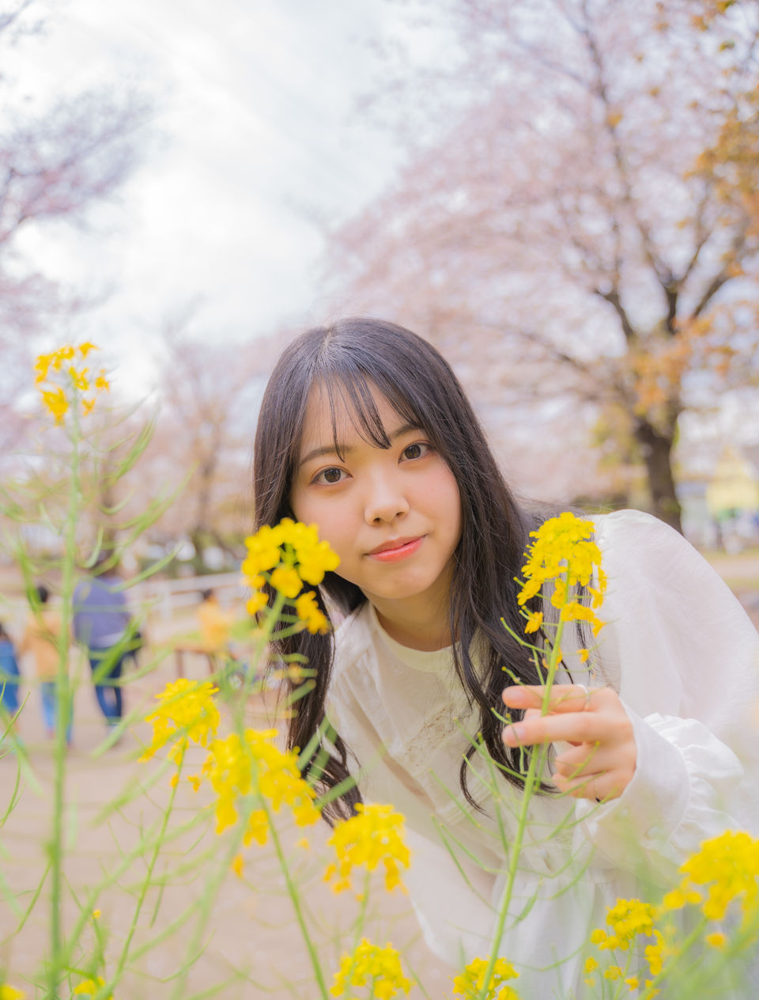
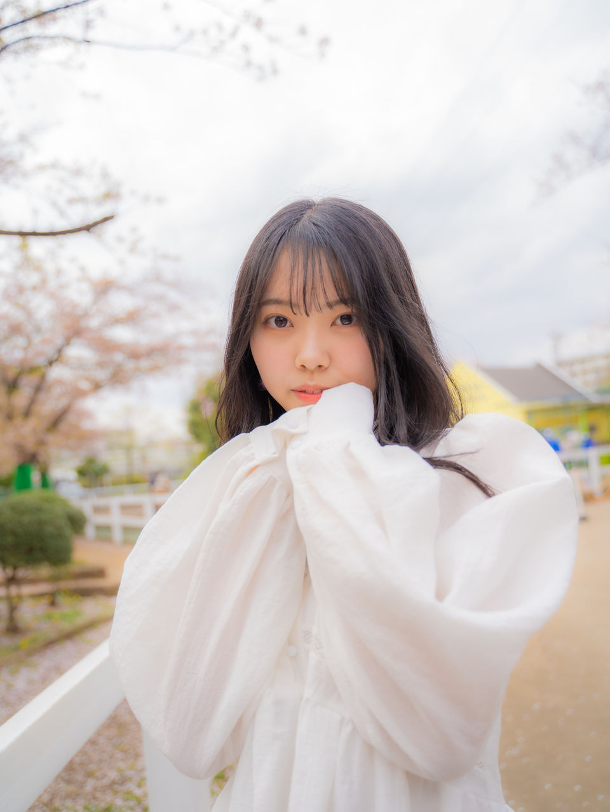
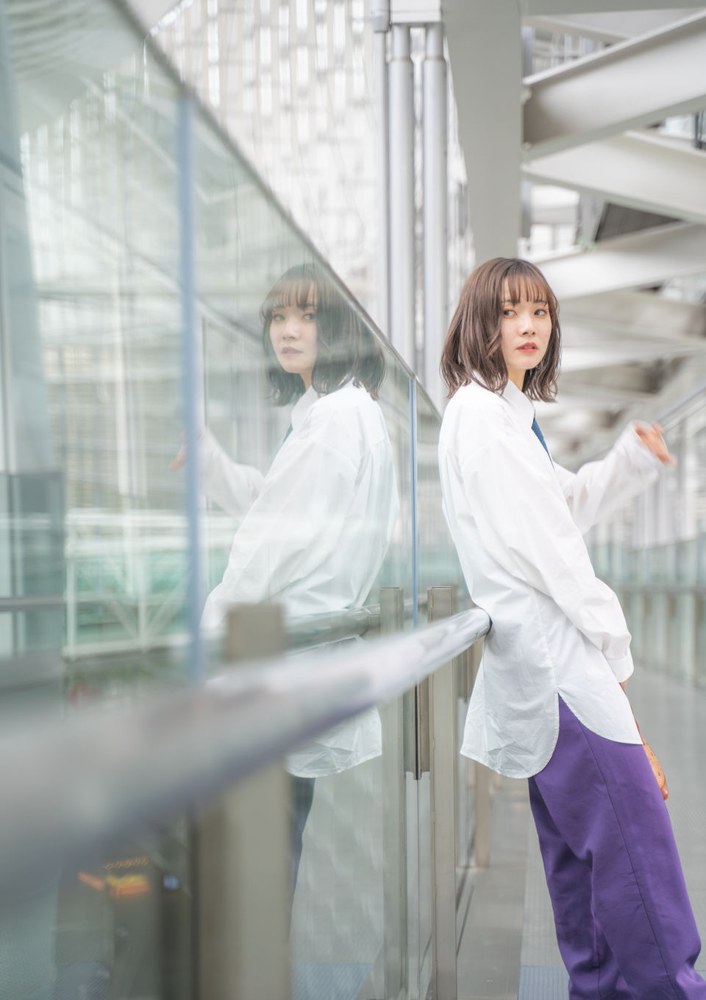
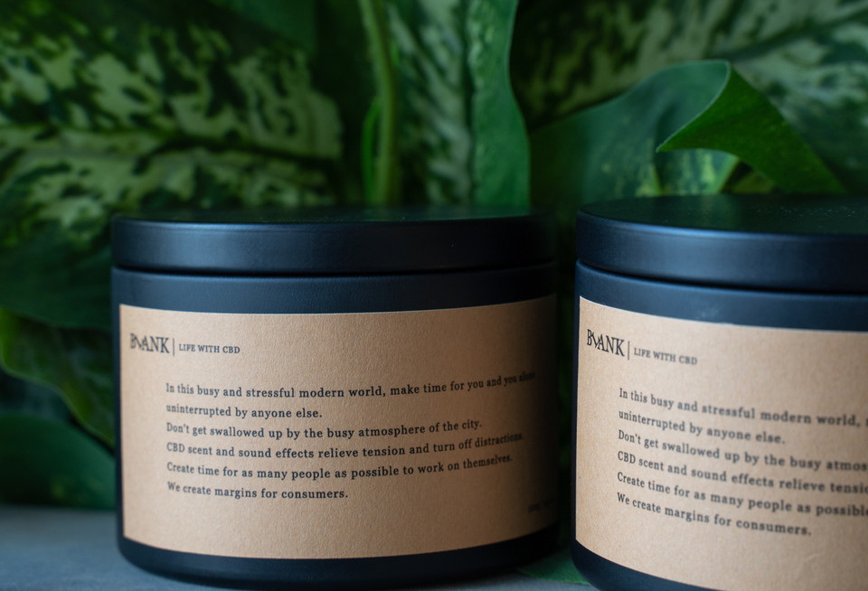

Natsumi Teshima
Software Engineer & Marketer ソフトウェアエンジニア & マーケター
About me 自己紹介
I work as a Software Engineer with a background in marketing and branding.
ソフトウェアエンジニアとして活動する一方で、マーケティングやブランディングの経験も持っています。
I'm currently studying Computer Science at 42 Tokyo, focusing on C, C++, web technologies, networking, and DevOps through hands-on projects. I'm also majoring in Information Management at Tokyo Online University.
現在は42 Tokyoでコンピュータサイエンスを学んでおり、C、C++、Web技術、ネットワーキング、DevOpsを中心に、実践的なプロジェクトを通じて技術を習得しています。また、東京通信大学では情報マネジメントを専攻しています。
Since 2024, I've been freelancing across both engineering and marketing.
2024年からはフリーランスとして、エンジニアリングとマーケティングの両面からプロジェクトに携わっています。
Before engineering, I founded a D2C wellness brand called BLANK and ran a crowdfunding campaign that achieved 169% of its goal. I also gained experience in business growth and brand building through marketing internships at startups and a VC fund.
エンジニアになる以前は、D2Cウェルネスブランド「BLANK」を立ち上げ、クラウドファンディングで目標達成率169％を達成しました。そのほか、スタートアップやVCでのマーケティングインターンを通じて、事業成長やブランド構築に関する経験を積んできました。
Growing up between Tokyo and the Philippines, and having lived in the Netherlands, I've been shaped by diverse cultures and perspectives. I'm a native Japanese speaker with working proficiency in English.
東京とフィリピンで育ち、オランダでの生活も経験したことで、多様な価値観や文化に触れてきました。日本語を母語とし、英語でも業務レベルのコミュニケーションが可能です。
Technical skills 技術スキル
Design tools デザインツール
Bio 経歴
- 2028 Tokyo Online University — B.S. Information Management (expected, GPA 3.9/4.0) 東京通信大学 情報マネジメント学部 卒業予定（GPA 3.9/4.0）
- 2026 Graduated from 42 Tokyo 42 Tokyo 卒業
- 2025 NPC Worldwide fitness competition (Netherlands) — Novice A 1st place, Novice Overall 2nd place NPC Worldwide フィットネス大会（オランダ）— Novice A 優勝、Novice Overall 準優勝
- 2025 SFF Chiba fitness competition — Top 6 SFF千葉 フィットネス大会 — Top 6
- 2024 Enrolled at 42 Tokyo — peer-to-peer software engineering program 42 Tokyo 入学 — ピアラーニング型ソフトウェアエンジニアリングプログラム
- 2023 Assistant Director at Boku to Watashi to Inc. 株式会社 僕と私と アシスタントディレクター
- 2022 Moved to the Netherlands — interned at Skyland Ventures (seed-stage VC) オランダへ移住 — Skyland Ventures（シードVC）でインターン
- 2022 Launched BLANK crowdfunding campaign — 169% funded, 92 backers BLANK クラウドファンディング実施 — 達成率169%、支援者92名
- 2021 Started own marketing business (BARS Marketing), founded D2C brand BLANK マーケティング事業（BARS Marketing）を開始、D2Cブランド BLANK を設立
- 2021 Marketing intern at CODEGYM (programming education startup) CODEGYM（プログラミング教育スタートアップ）でマーケティングインターン
- 2019 Graduated from Kyoei Gakuen Senior High School 共栄学園高等学校 卒業
Photography 写真
Photography as a hobby since 2019. 2019年から趣味で写真を撮っています。





Interests 興味・関心
Fitness competition · Photography · Minimalism · Making things · Travel & languages · Dutch streetscapes, design, and simple living フィットネス競技／写真／ミニマリズム／ものづくり／旅行・語学学習／オランダの街並みとデザイン、シンプルな暮らし